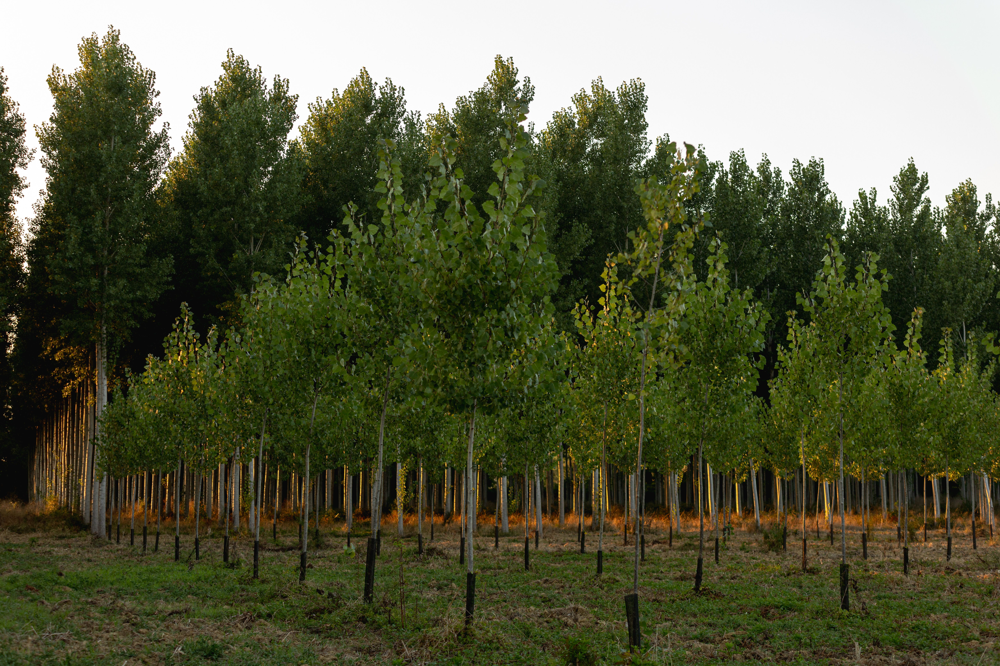

Restaurar
Reforestación
Recuperar áreas degradadas con especies adecuadas ayuda a reconstruir cobertura vegetal y hábitats.
05 · Soluciones
Restaurar, proteger y reducir la presión sobre los bosques puede modificar el rumbo.
Acciones
Restaurar
Recuperar áreas degradadas con especies adecuadas ayuda a reconstruir cobertura vegetal y hábitats.
Conservar
Conservar zonas naturales evita nuevas pérdidas y mantiene ecosistemas que todavía funcionan.
Elegir
Reducir desperdicios y preferir productos de origen responsable ayuda a disminuir presión sobre los recursos forestales.
Aprender
Comprender la relación entre nuestras decisiones y el ambiente facilita cambios duraderos en comunidades y escuelas.

Una huella diferente
No existe una única solución. La conservación depende de políticas, comunidades, educación, producción responsable y participación ciudadana.
Volver al inicio